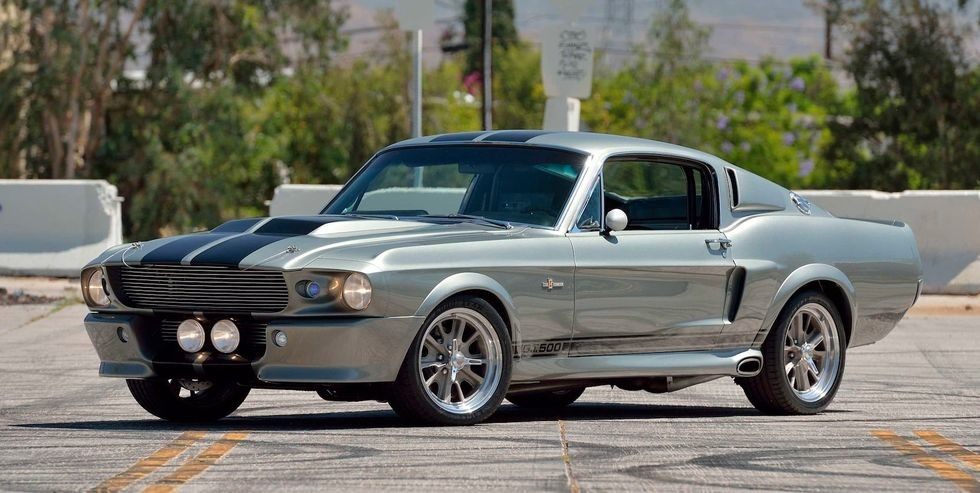
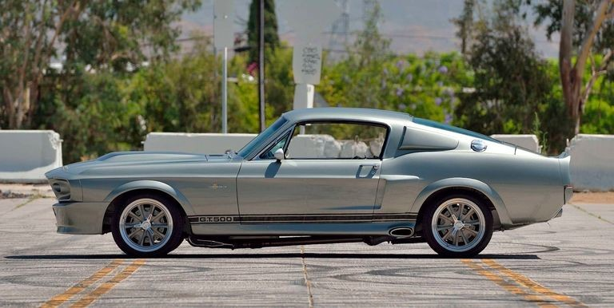
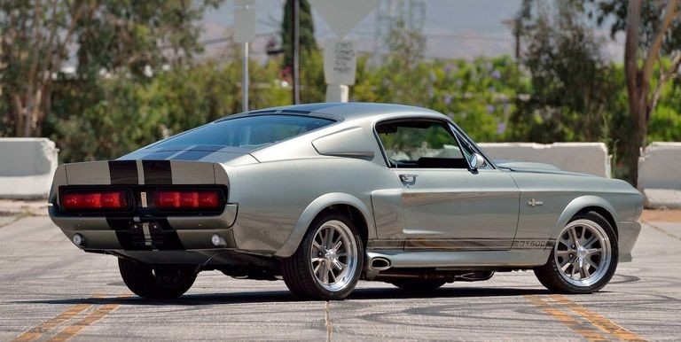
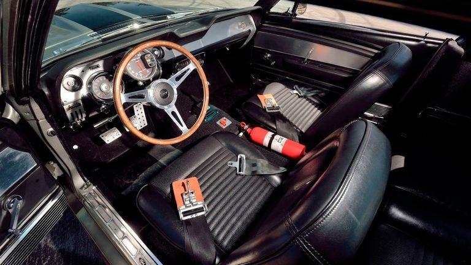
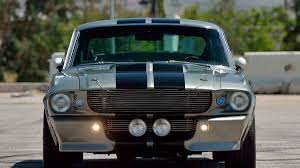
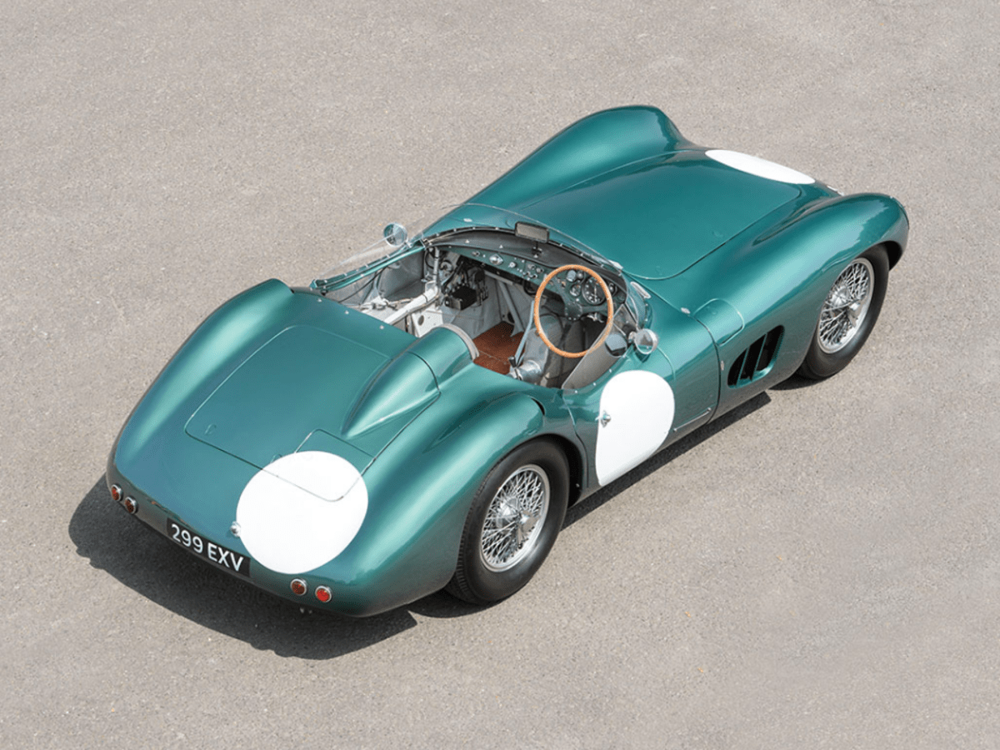
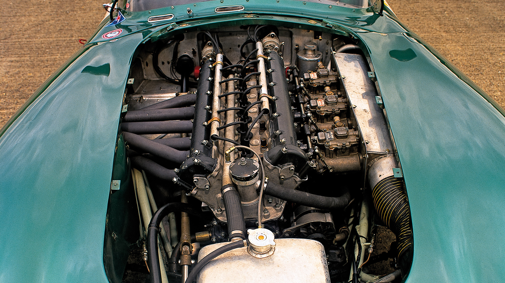
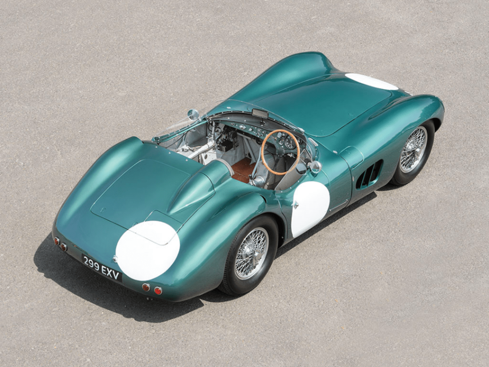
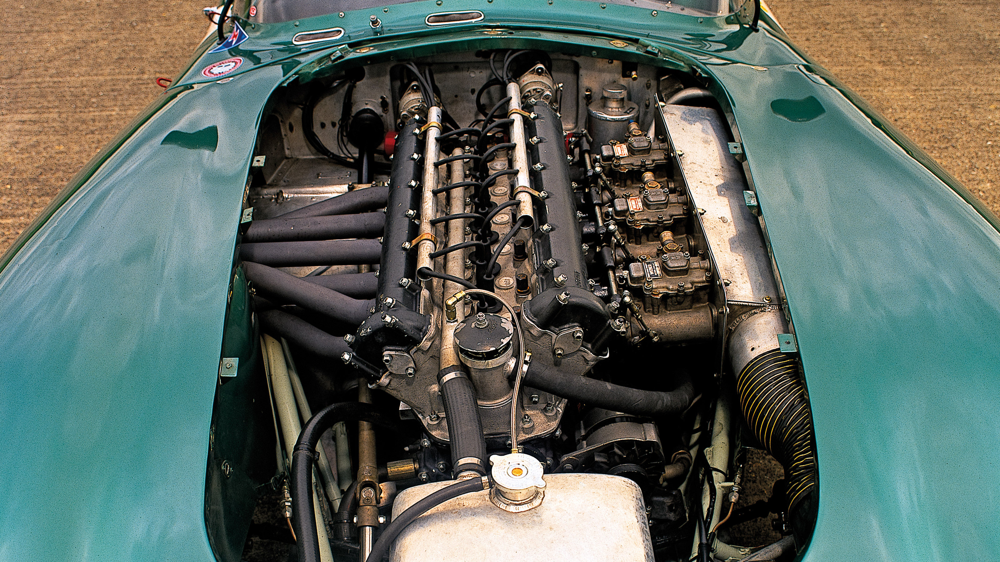

Autos en exhibicion
Ford Mustang Eleanor "Pony"






El Ford Mustang Eleanor es un ícono de potencia y elegancia en el mundo de los automóviles clásicos. Con su distintivo diseño de carrocería fastback y su inconfundible esquema de colores plateado y negro, Eleanor se alza como un símbolo de estilo y velocidad. Bajo el capó, su corazón late con un poderoso motor V8 que ruge con una potencia impresionante, haciendo que cada arranque sea una experiencia emocionante. Eleanor no es solo un automóvil; es una leyenda viviente que desafía el tiempo y sigue dejando una estela de admiración en su estela, cautivando a quienes tienen el privilegio de verla en acción.
 


